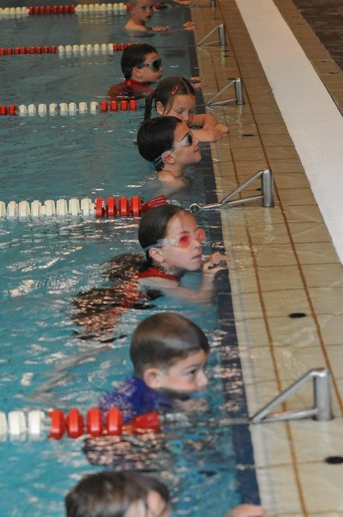

Zin in een leuke uitdaging? Hou je van sporten? Zou je graag eens willen zien hoe straf jij wel bent in zwemmen én lopen? Doe dan mee aan onze “ik doe aan triatlon- test”!
Iedereen, tussen de 6 en 18 jaar kan deelnemen. Ben je een getrainde triatleet of zou je gewoon jezelf eens willen testen? Iedereen is welkom én iedereen krijgt een super coole triatlon t-shirt!
Natuurlijk moeten de allerkleinsten niet dezelfde proeven afleggen zoals de 18-jarigen. Het geboortejaar waarin je een bepaalde leeftijd wordt, bepaalt welke afstanden je moet afleggen. Het maakt dus niet uit of je al jarig bent geweest op de datum van de “Triatlon: Ook voor U!”-organisatie.
| Leeftijd |
Zwemmen |
Lopen |
| 6 jaar - 9 jaar |
100m |
500m |
| 10 jaar - 18 jaar |
200m |
1000m |
Heb je al triatlonervaring? Vorig jaar ook reeds meegedaan aan een talentdetectie? Dan kan ook jij nog steeds meedoen! Check of je vooruitgang geboekt hebt of probeer je deelnamebewijs voor de Vlaamse talentdag op het einde van het seizoen te verzekeren op een van onze “Triatlon: Ook voor U!”-testmomenten. En wie weet word jij volgend jaar ook naar de trainingen bij onze Topsportjeugdcoaches uitgenodigd!
DE TEST GAAT DOOR OP 11MEI VANAF 9U30 IN HET ZWEMBAD VAN MALDEGEM, DE LOOPPROEF GAAT DOOR NA HET ZWEMMEN OP DE 400M PISTE.
Bij vragen mail gerust naar steven.haeck1@telenet.be of bel 0476 90 70 29
Groeten de jeugdtrainers smo-Specialized